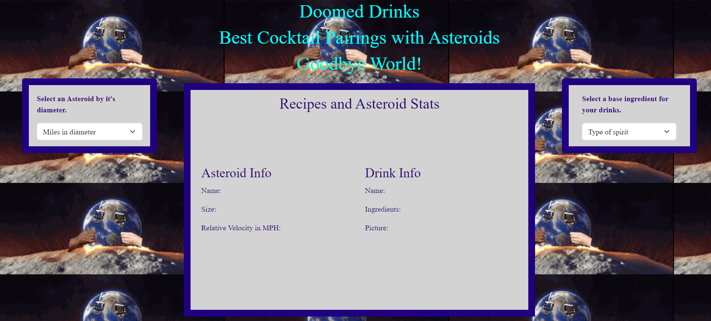
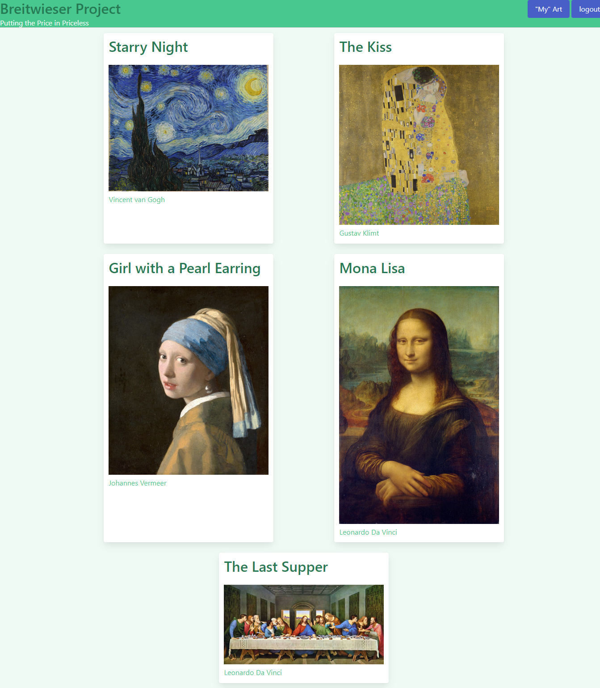
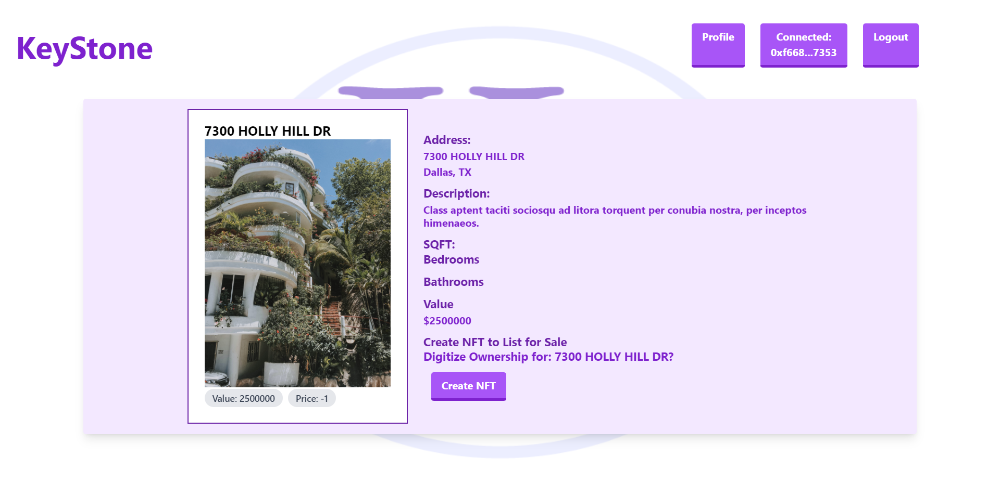

Doomed Drinks
Armageddon meets Cocktail in this site that specializes in pairing near earth objects with drinks to be enjoyed. This site pairs two APIs in order to show asteroid information including size and distance and drink information which includes recipes and ingredients

Breitweiser Project
Inspired by the art thief Stephane Breitweiser a new e-commerce site was born. This site allows users to log in and see what ill gotten art works are available for sale and allows the user to upload the art they "own" for sale as well. Just type in the secret "password" at the landing page to explore.
